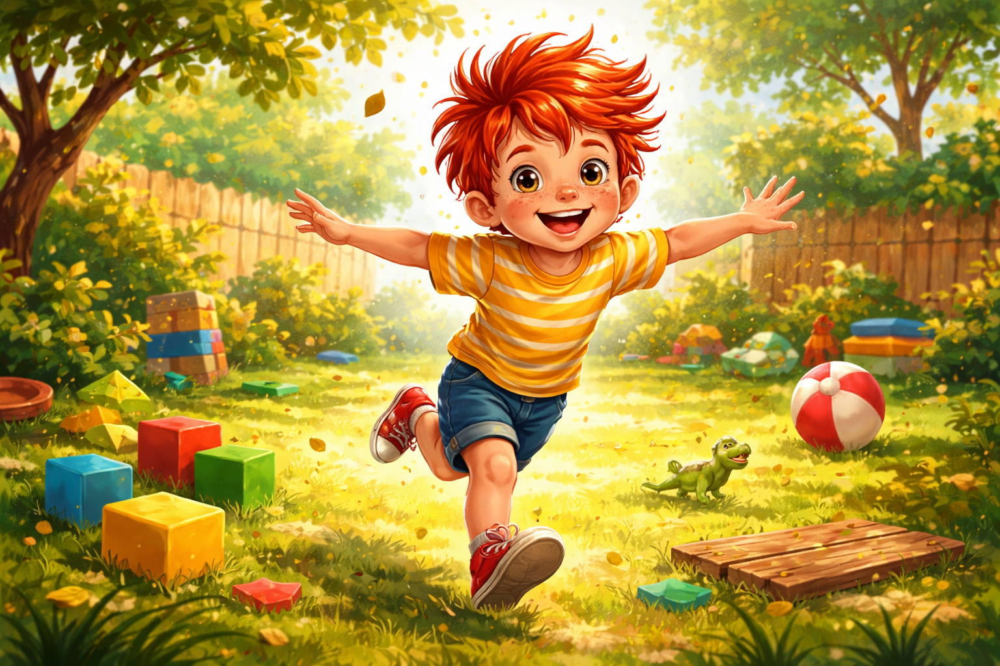
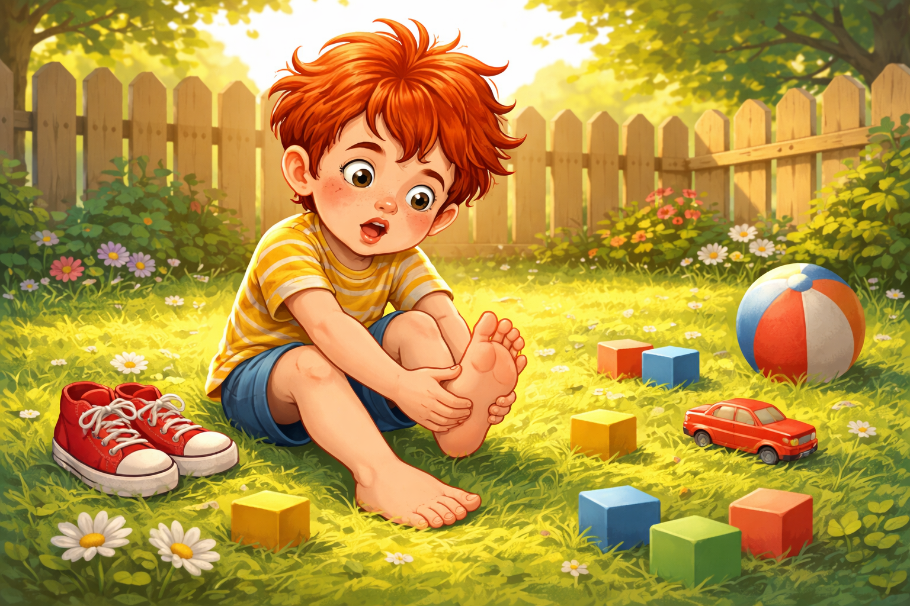
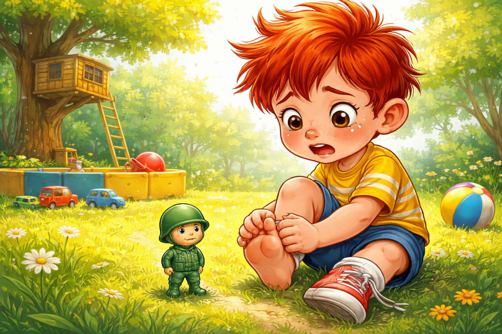
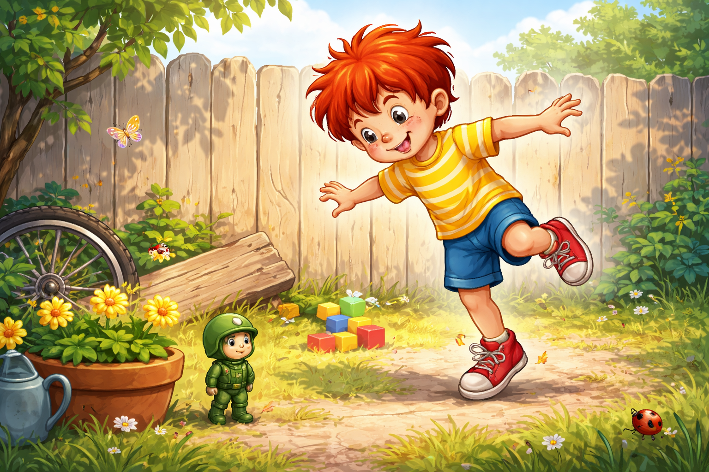
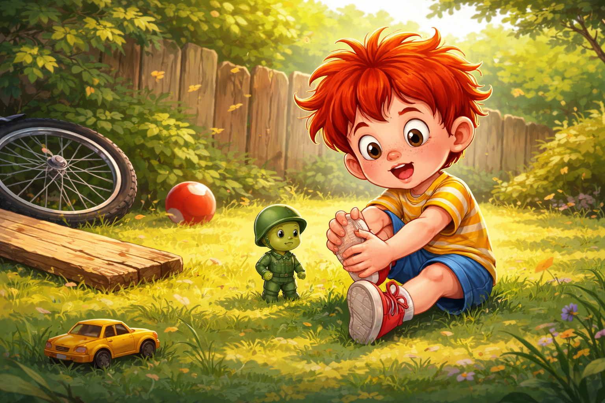
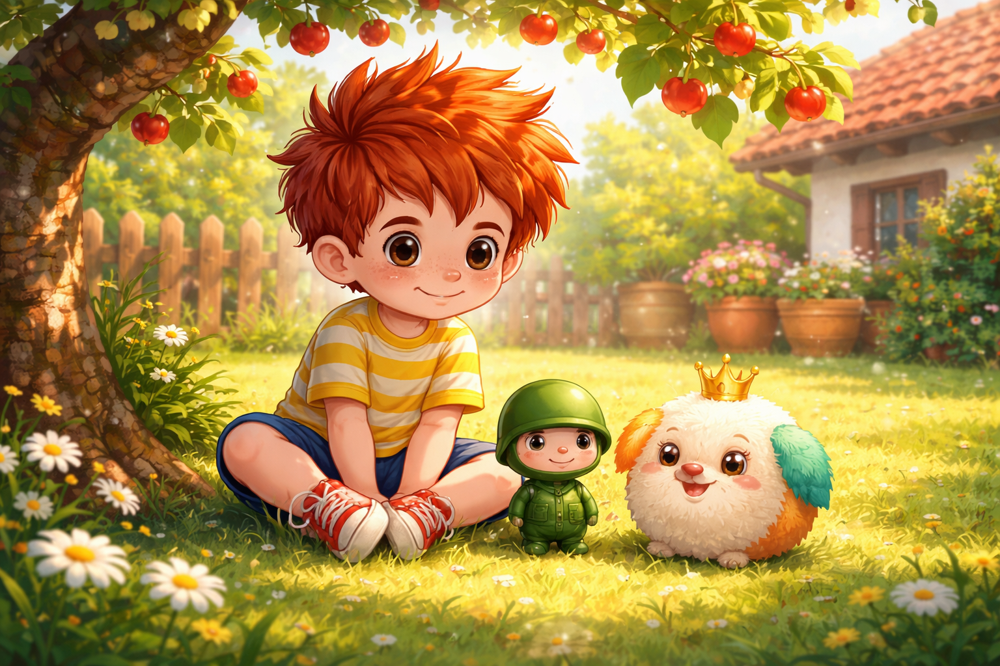
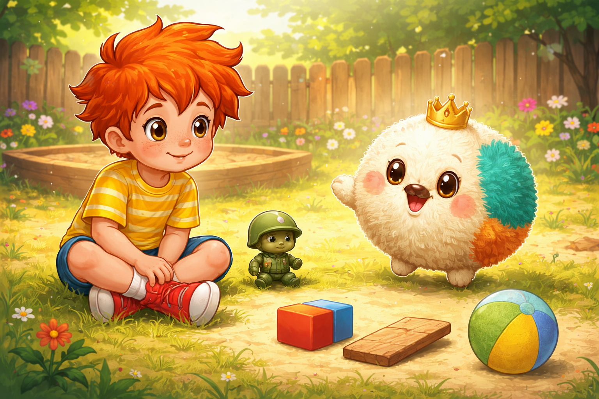
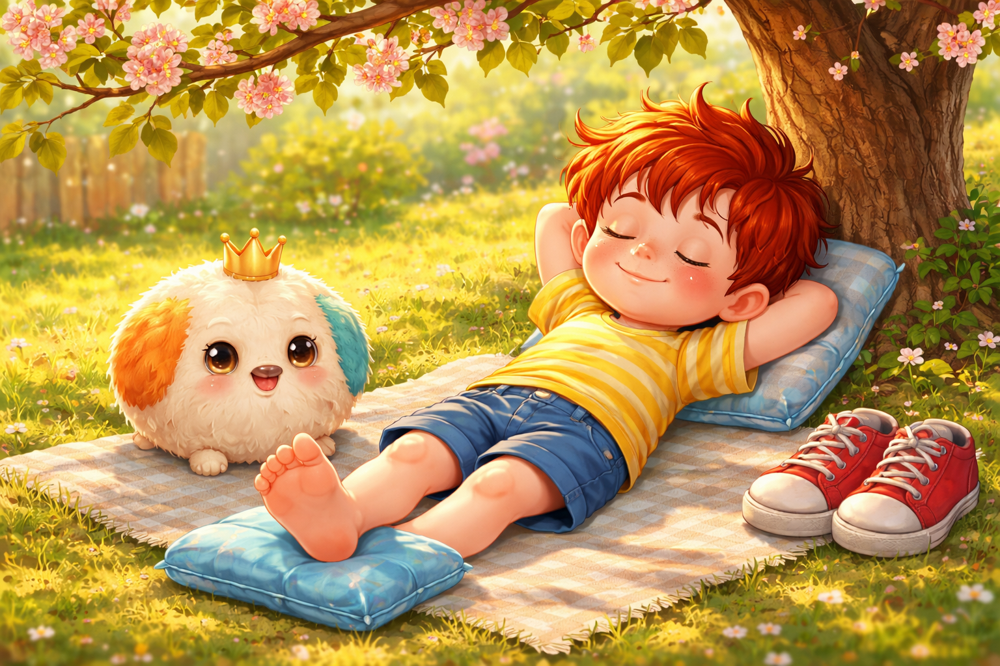
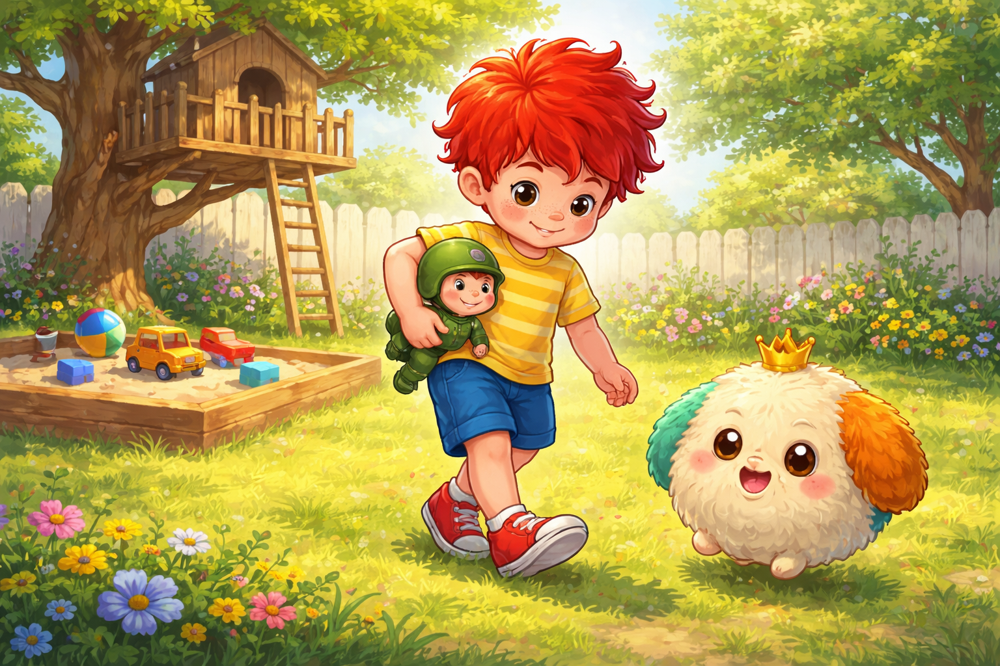

Палавко си удари крачето
Здравей, аз съм Палавко - и пакостта ми е суперсила!
Днес ще ти разкажа как, докато тичах, скачах и се правех на супергерой, си ударих крачето. И как с помощта на умна идея, приятел и малко смелост се научих, че да внимаваш и да се грижиш за себе си може да бъде също толкова приключенско, колкото и всяка пакост.
Готов ли си? Хайде да скочим в историята. Ама внимателно!

Слънцето светеше силно, а дворът беше целият в сенки, трева, топки, листа и капани за боси крачета: кубчета, колелца, миниатюрен динозавър, който чакаше някой да се спъне в него.
А този „някой“ винаги беше Палавко.

Палавко тичаше из двора като вихър.
- Супер Палавкоооо, летяяя! - крещеше той и размахваше ръце като хеликоптер.
И точно в този момент...
Туп!
- Ай-яй-яяяй!

Палавко се спъна в един забравен строителен блок, подскочи, размаха крака и седна на земята като спаднал балон.
- Охохохо, кракът ми! - простена той и стисна пръстчето си. - Това сигурно е атака от злите сили!
Точно тогава от прозореца на стаята се подаде Рико - верният пластмасов войник, който винаги идваше, когато битката изглеждаше изгубена.

- Командире, какво се случи? - извика Рико. - Враг? Капан?
- Ударих си крака - каза Палавко драматично. - Сигурно е счупен! Или леко наранен! Или може би само леко огорчен...
Рико се приближи, огледа крачето и го докосна със строго войнишко потупване.
- Диагноза: ударено и наранено, но не и победено. Ще оживееш.
- Ама много боли-и-и! - проточи Палавко.
- Има само един начин да победим болката - важно каза Рико. - Мисия: Почивка и Внимание!

Но Палавко не обичаше тези мисии. Още след минутка той вече скачаше на другия крак.
- Виж, Рико, мога и така! Единият крак е супергерой, другият е в отпуск!
- Не! - извика Рико. - Командире, войниците си лекуват раните, иначе стават още по-големи!
Но Палавко не слушаше. Заподскача по една стара дъска, подскочи върху гумата на колелото, после се опита да се покатери на оградата.
И точно тогава...
Бум!

Удари се пак. Този път на другото краче.
- Ооох, Палавко... - измънка Рико. - Това вече е двойно поражение.
Изведнъж от сенките под черешата изскочи нещо дребно и шумно.
- Ха-ха! Пак ли си ударен? Пак ли тичаш като вихър без спирачки? - попита малкото създание.

Беше Топурко - пухкава топчеста игривка, която приличаше на топка с очи и крака. Той беше коронясан цар на ненужните скокове, но и експерт по справяне с болежки, защото постоянно падаше.
- Палавко, слушай ме - каза Топурко, докато се търкаляше около него. - И аз си блъскам крачетата всеки ден. Но научих три важни правила!
Палавко издуха носа си.
- Кои?

Топурковите три правила
- Като те боли - седни. Иначе пак ще те заболи.
- Като не гледаш къде стъпваш - удряш се. Закон на Топурковата гравитация.
- Като се грижим за себе си - ставаме още по-бързи и смели.
Палавко се загледа в крачетата си. И двата пръста изглеждаха леко тъжни.
- Добре... - въздъхна той. - Ще поседя. Но само пет минути!
- Десет! - каза Рико.
- Двайсет! - рече Топурко.
- Добре де... петнайсет - примири се Палавко.

Тримата седнаха под черешата. Палавко сложи хладен компрес, Рико му пазеше, а Топурко му показваше как да мърда пръстчетата смешно като танцуващи човечета.
И чудо - след малко вече не болеше толкова.
И тогава Палавко разбра нещо важно.
- Ей... ако бях послушал още в началото, щях да си спестя второто тупване - каза той.
- Точно така - кимна Рико. - Грижата за себе си не е слабост. Това е суперсила!
- И ако гледаш къде стъпваш - допълни Топурко, - няма да се натъкваш на мини-динозавърчета!

Палавко се засмя, хвана Рико под мишница и тупна Топурко по пухчето.
- Хайде тогава да играем! Но внимателно.
- Най-сетне! - възкликна Рико. - Мисия „Внимателно Забавление“ започва!
И тримата хукнаха към двора. Този път Палавко гледаше къде стъпва.
Поуката
Понякога да паднеш или да си удариш крачето е неприятно. Но да се научиш да внимаваш, да се грижиш за себе си и да си даваш почивка - това е истинска суперсила.
Когато внимаваш, играта става още по-забавна.